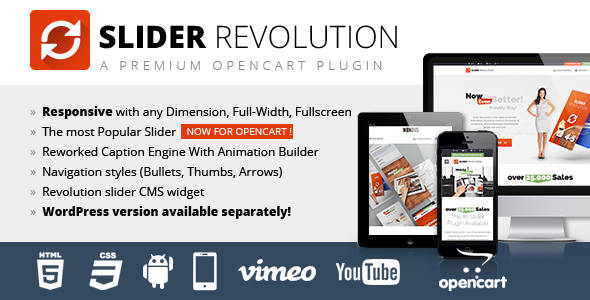
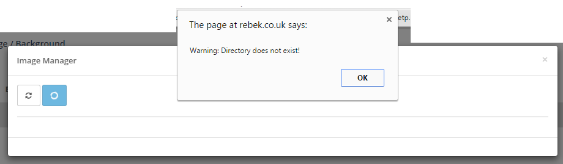
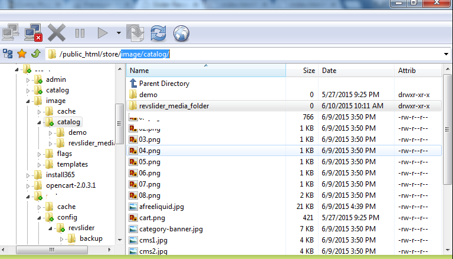

Welcome to opencart "Slider Revolution"
Install RevolutionSlider in opencart
Unzip Revslideropencart Module And Upload Your Store Root Directory.(Must be Upload All Files and Folder)
Then Go to Extentions->modules with your opencart admin menu bar.
Above Opencart 2.0 Version

Bellow Opencart 2.0 Version

Importing Demo Sliders - View Screencast
You can download all sample demo slider in zip format from http://revolution.themepunch.com/example-downloads-opencart
Sometimes the easiest way to learn is to start with an example that's already built and then modify it. To do that, we can import one of the demo examples available. Here's a list of the available demos. Click the listed links to see the online demos they correspond to (actual imported content may vary).
- fullfeature_boxed.zip - view demo
- fullfeature_fullscreen.zip - view demo
- fullfeature_fullwidth.zip - view demo
- kenburns_boxed.zip - view demo
- kenburns_fullscreen.zip - view demo
- kenburns_fullwidth.zip - view demo
- kenburnsexport.zip - view demo
- parallax_scroll_slider.zip - view demo
- parallax_slider.zip - view demo
- sliderpreview.zip - view demo
- sliderpreview_fullscreen.zip - view demo
- textsplits.zip
- vertical_boxed.zip - view demo
- vertical_fullscreen.zip - view demo
- vertical_fullwidth.zip - view demo
- video_boxed.zip - view demo
- video_fullscreen.zip - view demo
- video_fullwidth.zip - view demo
- videoexport.zip - view demo
To get started, from the plugin's main admin page, click the Import Slider option:


Next, navigate to the folder named example-zips. It will be located inside the unzipped file you downloaded from CodeCanyon:


After importing the example, you'll then see the slider listed at the top of the page:

Special Note: If you've imported an exported slider you previously created from one domain to another, chances are the slider's image urls will need to be updated. To do that, visit the slider's main settings page, and inside the "Import/Export" section, use the tool shown in the following screenshot:

Creating a New Slider - View Screencast
To create a new slider, visit the plugin's main admin page, and click the Create New Slider button:


Next, give the slider a custom name and "alias"

Finally, scroll to the bottom of the page and click the Create Slider button.
Special Note: If you'd also like to adjust your slider's main settings, you can do that before clicking the "Create Slider" button. But this isn't necessary to create a new slider, as you can adjust your slider's main settings after your new slider is officially created.

The page will then be redirected to the plugin's main admin page, where you'll see you're new slider listed:

You're now ready to start customizing your slider's main settings.
Slider Main Settings
Once you've created your first slider, the next step is to choose your slider's main settings. From your slider's list in the plugin's main admin page, click the "Settings" button shown here:

You'll then be taken back to the page where you first named your slider. Here you'll find two columns on the left and right side, each containing several sections for your slider's main settings:

Main Slider Settings
^ back to Slider Main Settings menu

- Slider Title: The name of your slider. Can be anything, and is only used for admins to keep track of their sliders.
- Slider Alias: Will represent the slider's shortcode alias. Use lower-case letters, and avoid spaces and special characters (dashes and underscores ok).
- Slider Shortcode: This value will populate automatically based on the Slider Alias you've chosen. Copy and paste this into one of your pages/posts WYSIWYG editor for the easiest way to add a slider to one of your pages.
- Source Type: Choose between a regular slider or a post-based slider.
- Gallery: The default option. If you plan to build a slider manually through the slider's admin, choose this option.
- Posts: If you want your slider's content to be based on a set of posts or pages, choose this option.
- Specific Posts: Choose specific posts/pages you wish to include as your slider's main content source. Click here to learn how you can get a page/post ID.
- Slider Layout: View Screencast
- Auto Responsive: Usually the best option for most websites. The slider will always "respond" based on the slider's immediate parent container (the HTML container of your theme where the slider is placed).
- Fixed: A non-responsive slider (slider's size will never change, use this option if your website is not responsive.
- Custom: If you need a "responsive" slider, it's usually best to use the "Auto Responsive" option. But the Custom option is useful if you need more advanced control over how the slider's responsive behavior. There are 6 "responsive points" you can choose:

- Full Screen: The slider's size will equal the window's entire width and entire height. For example, if the screen size is 1024x768, the slider's display size will also be 1024x768, and will adjust dynamically depending on the user's screen size. When this option is chosen, you'll see some additional options that will help you position the slider on the page in relation to other page content:
- Unlimited Height: (only available when "Auto Responsive" is selected) Click here for an in-depth explanation about how this option works.
- Force Full Width: (only available when "Auto Responsive" is selected) Use this option to force the slider to be full-width on your web page.
- Grid Settings: Represents the slider's initial size. If the "Slider Layout" (#5 above) is "Fixed", these numbers will represent the size of your slider. If the Slider Layout is "responsive" ("Custom", "Auto Responsive" or "Full Screen"), the slider will "respond" based on these initial values. View this FAQ to learn more about "Ideal Image Size", and how it corresponds to the slider's "Grid Width" and Grid Height".
- Grid Width: The Slider's initial width (required value)
- Grid Height: The slider's initial height (required value)
- Layout Example: A visualization representing the slider's layout options.
- Save Settings: Save the slider's currently selected settings.
- Delete Slider: Delete the current slider (this action is permanent!)
- Close: Return to plugin's main admin page.
- Edit Slides: Shortcut button to edit the slider's individual slides.
- Preview: A popup modal will load allowing you to preview the current slider (a slider must have some slides added to it before a preview is possible)


General Settings
^ back to Slider Main Settings menu

- Delay: A global delay that will be used for the time between each slide is shown (this value can be optionally overridden inside each individual slide).
- Shuffle Mode: Randomize the slide order each time someone views the slider on your web page.
- Lazy Load: Load images "On Demand" when shown inside the slider (as opposed to loading all sliders images immediately when the page first loads). This option is useful for speeding up initial page loading, and can also be useful for solving conflicts that involve other cache plugins/services such as CloudFare.
- Use Multi Language (WPML): Use this option if your site's setup is WPML-based.
- Enable Static Layers: Adds a button the slide list that allows you to add permanent layers to the slider (i.e. will always be present even when your slides change).
- Stop Slider: Autoplay Option. Set this to "On" for no auto-play.
- Stop After Loops: Choose to stop the slider after a specific number of loops.
- Stop At Slide: Used in conjunction with "Stop Slider" above, choose which slide the slider should stop at (i.e. enter the number "1" to stop at the first slide).
Google Font Settings
^ back to Slider Main Settings menu

The new location for Google Fonts will be listed under "Punch Fonts" in your Revolution Slider.


Position
^ back to Slider Main Settings menu

The "Position" section is where you can choose how the slider is aligned on the page, and also add margins for the slider. Usually "center" or "left" is best for "Position on the Page", and the "Margin Top" and "Margin Bottom" options are useful for spacing out the pages other content that exists above and below the slider.
Appearance
^ back to Slider Main Settings menu

- Shadow Type: An optional drop shadow for the slider. Choose between "No Shadow", or one of the three built-in shadow types (1, 2 or 3)
1:
2:
3:
- Show Timer Line: The slider's main "timer line" that will represent the time between each slide change. "Top" and "Bottom" are position options for the timer line, or you can choose "Hide" for no timer line.
- Padding (border): Adding a value here will create an inset border for the slider.
- Background Color: The slider's main background color. This will show before the first slide shows, and also be shown if you're using "transparent" slides (an individual slide without a main background image or background color). For no background color (i.e., a "transparent" background), enter the following value manually into the field: rgba(0, 0, 0, 0)
- Dotted Overlay Size: Choose to use a dotted/transparent overlay graphic for the slider. This is a pattern-based overlay. Options are:
- None
- 2x2 Black
- 2x2 White
- 3x3 Black
- 3x3 White
- Show Background Image: Choose to use a main background image for the slider. This will show before the first slide shows, and also be shown if you're using "transparent" slides (an individual slide without a main background image or background color).
- Background Image URL: The absolute url to the slider's main background image (if optioned above).
- Background Fit: The CSS "background-size" for the slider's main background image (if optioned above).
- Cover: Stretch the background image to always fill the entire slider (cropping may occur).
- Contain: Always "fit" the entire image inside the slider. Cropping will never occur, but depending on the size of the image vs. the slider's "Grid Size", there may be some blank space shown on the sides of the image.
- Normal: No background resizing will occur (i.e., the image will display in its original size at all times).
- Background Repeat: If your slider's main background image is a regular image, set this to "None". Otherwise, if your main background image is meant to be a repeating pattern (png or gif), use the "repeat", "repeat-x" (only repeat horizontally) or "repeat-y" (only repeat vertically) options.
- Background Position: The slider's main background position (10 position points available). If you're using "Cover" as the "Background Fit" option, usually "center top" or "center center" is a good option here. Otherwise, for a "Background Fit" of "Contain", "center center" is a good option here.


Parallax
^ back to Slider Main Settings menu
This section is for applying parallax-based animation to your slide's layers. Click here and here for examples. You can also import one of the parallax demo sliders ("example-zips/parallax_slider.zip" or "example-zips/parallax_scroll_slider.zip") to use as a starting point.

- Enable Parallax: This will activate the parallax effect, and also add a new "parallax" option to the layer options section (see screenshot below).
- Disable on Mobile: Parallax usually works best with traditional mouse movement. This option allows you to disable the parallax effect for mobile where a "mouse" isn't available.
- Type: Options are:
- BG Freeze: Set this to "On" if you don't want your slide's main background to be part of the parallax effect.
- Level Depth 1-10: The different level values that can be chosen from as a layer's parallax effect. Use smaller numbers for little movement, and larger numbers for larger-based movement. Once set, you can then choose a "Level" that you'd like to apply when editing an individual layer (i.e., level "1", level "2", etc.).

Spinner
^ back to Slider Main Settings menu
The "Spinner" represents the slider's visual preloader. This will be shown when the page first loads, and also between slides if you're using the Lazy Load option. There are 6 preloaders you can choose from. Select from the dropdown list to see a live preview of each.

Navigation
^ back to Slider Main Settings menu

- Stop On Hover: Stop the slider's autoplay when hovering your mouse anywhere on top of the slider.
- Keyboard Navigation: Enable keyboard shortcodes to change slides using the left/right arrow keys.
- Navigation Style:
Round:
NavBar:
Preview 1:
Preview 2:
Preview 3:
Preview 4:
Old Round:
Old Square:
Old Navbar:
Custom: If the slider came packaged with your theme, your theme may have a "custom" navigation style for this option. Otherwise, advanced users can use this option and add some custom CSS to the slider for custom navigation buttons. The class names for this would be:
.tp-leftarrow.custom
.tp-rightarrow.custom - Bullet Type: Options are
- None: No bullets or thumbnails
- Bullet: Traditional bullets
- Thumb: Traditional thumbnail strip (example below)
- Navigation Arrows:
- With Bullets: Arrows will be placed on the sides of the bullets (not compatible with all "Navigation Styles").
- Solo: Will be displayed on the left/right sides of the slider
- None: Don't use navigation arrows.
- Always Show Navigation: Choose to always show the navigation elements (as opposed to the default value which is to only show the navigation on mouse hover).
- Hide Navigation After: Choose a time (in milliseconds) to hide the navigation after the user moves their mouse outside the slider area.
- Bullets / Thumbnail Position: Horizontal and Vertical alignment plus an offset pixel option (offset values will be in relation to the position).
- Left Arrow Position: Horizontal and Vertical alignment plus an offset pixel option (offset values will be in relation to the position).
- Right Arrow Position: Horizontal and Vertical alignment plus an offset pixel option (offset values will be in relation to the position).


Thumbnails
^ back to Slider Main Settings menu
These are thumbnail settings only. To enable thumbnails, edit the Navigation Settings.

Mobile Touch
^ back to Slider Main Settings menu

- Touch Enabled: Allow touch-swipe to navigate between slides on mobile.
- Swipe Velocity: A number between 0-1. Swipe sensitivity. Smaller values equal higher sensitivity.
- Swipe Min Touches: The minimum amount of fingers needed for a swipe action to occur.
- Swipe Max Touches: The maximum amount of fingers needed for a swipe action to occur.
- Drag Block Vertical: Prevent the page from scrolling when swipe actions occur.
Mobile Visibility
^ back to Slider Main Settings menu
Some of the options listed here are self-explanatory. So we'll skip over those and only cover the ones that require further explanation.

- Hide Slider Under Width: Choose to hide the slider when the screen size is below a defined number. For example, if you wish to hide the slider on smartphones only, enter the number "641" here.
- Hide Defined Layers Under Width: (Enter the number 0 if you don't plan to use this option). A screen width number to hide only certain layers. "Defined Layers" are individual slide layers you've chosen to hide under this value. Individual layers can designated for "hiding" by editing the layer settings as shown in the following screenshot:
- Hide All Layers Under Width: (Enter the number 0 if you don't plan to use this option). Hide all slider layers when the screen's width is below this number (regardless of the layer's individual "Hide Under Width" value as described above).
- Hide Thumbs Under Width: A screen width number to hide the thumbnails under. For example, there may not be enough room for thumbnails on a smartphone. If that's the case, enter the number "641" here.
- Hide Mobile Nav After: An amount of time to hide the navigation after it appears (in milliseconds).

Single Slide
^ back to Slider Main Settings menu
If your slider only has one slide, this option can be used to run the single slide through a continuous loop.

Alternative First Slide
^ back to Slider Main Settings menu
These options can be used to display a specific slide first when the page loads, and also override that slides animation the first time the slider loads.

- Start With Slide: Load a specific slide number when the slider first loads on the page.
- First Transition Active: Use a custom transition for the first slide transition (will only be applied when the slider first loads).
- First Transition Type: An optional alternative transition for the first slide when the slider first loads.
- First Transition Duration: A custom transition duration when using a custom transition type (described above).
- First Transition Slot Amount: A custom value for a "slots-based" custom transition (use a number 7 or less).
Global Overwrites
^ back to Slider Main Settings menu
Use this option to globally apply a specific transition type and transition duration to every slide.

CSS / JavaScript
^ back to Slider Main Settings menu
This section allows you to add custom CSS and JavaScript to pages that only contain the slider. Click here for a good example of using Custom CSS.

Create a New Slide
After you've created a slider, you're ready to create some slides. Visit the slider's main admin page, and click the "Edit Slides" button as shown in the following screenshot:

You'll then be brought to a new page where you can create a new slide. Here's what the page will look like, and a breakdown of each option:

For this example, we'll use the "New Slide" option shown in the screenshot above. Once clicked, you'll be asked to choose a main background image for the slide. This can be an image you've already uploaded, or you can upload an image from inside the modal window that appears:
Quick Tip: You can instantly create multiple slides by selecting more than one image from the modal window.

After choosing an image for the slide, you'll then see the new slide listed. Here's a screenshot showing the new slide, with information about all the slide options:

Everything that would apply to an individual slide only is managed in this section. This includes setting a slides main background image, additional layer content, hyperlinking and animations.
Before getting started with each individual settings, let's review some of the general admin page controls:


General Slide Settings

- Slide Title: The name of the slide. Can be anything, and is only used in the admin for keeping track of your slides.
- Published: The "published" state of the slider. If "published", slide will show up inside the slider on the front-end. "Unpublished" means the slide will still exist in the admin, but will be hidden when the slider is viewed on the front-end (useful for creating new slides and not having them show up live on your site until the slide is officially ready for production).

- Visible From: A date and time-stamp from which to start showing the slide on the front-end of your site.
- Visible Until: A date and time-stamp from which to start hiding the slide from the front-end of your site.

- Transitions: Select one or more transitions for when the slide animates into view (this transition is for the slide itself, and not for individual content layers). Multiple selections will alternate each time the slide is visited. Or choose only a single transition (leave all others deselected) to dedicate a single transition to the slide. "Random Transitions" will automatically apply multiple random transitions. You can also choose a simple "Fade" or even "No Transition".
- Slot Amount: Applicable to all transitions with "slot" in the name. A "slot" named transition is when the background image will break into multiple parts and animate. The number of "slots" defined here will represent the amount of "parts" the animation breaks apart into. Use a number 7 or less here for optimal performance.
- Rotation: Rotation (-720 -> 720, 999 = random) Only for Simple Transitions.
- Transition Duration: The speed of the transition in milliseconds (a number between 300 and 1000 is usually best).


- Delay: The amount of time before the next slide shows. Leave blank to use the slider's master delay value. Otherwise, enter a number here to override the slider's master delay value, and apply a specific delay to this slide only.
- Save Performance: Normally when a the slider changes, any remaining visible layers from the current slide will animate out at the same time the new slide animates in. And in cases when the current slide has a large number of layers, this leads to lots of elements animating at the same time, which can sometimes cause the animations to appear slow or jagged. In these cases, the "Save Performance" option can be extremely helpful. When set to "On", all remaining visible layers from the current slide will animate out completely before the next slide animates in.

These options are for hyperlinking the entire slide. Click here for more information about hyperlinking slider content.
- Enable Link: Add a hyperlink to the entire slide.
- "Enable" = Use hyperlink
- "Disable" = No hyperlink.
- Link Type:
- "Regular" = hyperlink to another web page.
- "To Slide" = hyperlink to another slide within the current slider.
- Slide Link: Enter the url of the web page you wish to hyperlink to here (applicable when "Link Type" = "Regular")
- Link Opens In: (applicable when "Link Type" = "Regular")
- "Same Window" = open the link normally
- "New Window" = open the link in a new tab/window
- Link to Slide: Choose the slide number to link to (applicable when "Link Type" = "To Slide")
- Link Position:
- "Front" = the entire slide will be clickable, regardless of layer content.
- "Back" = the hyperlink will only be clickable when the user's mouse is not hovering one of the slide's layers.

Thumbnail: Specify a separate file to represent the slide's thumbnail (thumbnails must be enabled first in the slider's navigation settings). If no thumbnail is set, and the slider's navigation includes thumbs, a copy of the slide's main background image will be automatically resized and used as the slide's thumbnail.

- Class: Assign a custom class to the slide's main HTML element. Useful for applying custom external CSS styles.
- ID: Assign an "ID" attribute to the slide's main HTML element. Useful for quickly grabbing the slide's main HTML element with jQuery from an external script.
- Attribute: Add an attribute without a value to the slide's main HTML element.
- Custom Fields: Add custom attributes to the slide's main HTML element (multiple attributes supported, separate multiple attributes with commas).
Slide Main Image / Background
An individual slide's main background can be an image, a solid color, or nothing at all (transparent). You can also customize the appearance of your main background image by adjusting the "Background Settings" described below.
Special Note: This is different than the main background applied to the slider itself. Click here to review the slider's main background settings.

- Background Source:
- Image BG: If you didn't already select an image background when creating the slide, or if you want to change the image you previously selected, click the "Change Image" button and the WP media dialogue will popup, allowing you to choose a new image.
- External URL: Use this option if you want to load an image from another website.
- Transparent: Use this option for no background image and no background color (for a completely transparent slider, you'll also need to adjust the slider's main background settings as well)
- Solid Colored: Choose a solid color for the slide's main background.
- Image BG: If you didn't already select an image background when creating the slide, or if you want to change the image you previously selected, click the "Change Image" button and the WP media dialogue will popup, allowing you to choose a new image.
- Background Settings:
- Background Fit: The best way to make your images fit perfectly inside the slider is to resize your images in Photoshop to the same exact size used for the slider's Grid Width and Grid Height settings. Using "Cover" here is usually the best option.
- Cover: The image will always cover the entire slider. Cropping may occur.
- Contain: The image will always be shown in its entirety. No cropping will ever occur, but blank space may occur.
- Percentages: Choose a width and height percentage for image resizing.
- Normal: Never resize the image.
As mentioned above, sizing your images to match the same size as the slider's Grid Width and Grid Height is always best! But in cases where this isn't possible, lets explore how "Cover" and "Contain" would look if the original image size didn't match the slider's "Grid Width" and "Grid Height". For this example, we'll use a "Grid Width" and "Grid Height" of 900x300, and an image size of 600x300.
Original Image:
Background Fit = Cover: (when original image size doesn't match the slider's Grid Width and Grid Height)
Background Fit = Contain: (when original image size doesn't match the slider's Grid Width and Grid Height)
- Background Repeat: Useful when using a pattern based background image (10x10px png, etc.), that's meant to repeat.
- Background Position: 9 position points available. Useful for controlling how your image is positioned inside the slide. "Left Top" and "Center Center" are usually the best options.
Let's take a look at some examples of background position combined with the "Background Fit" options above:
Background Fit = Cover, Background Position = "Left Bottom"
Background Fit = Contain, Background Position = "Right Top"
- Background Fit: The best way to make your images fit perfectly inside the slider is to resize your images in Photoshop to the same exact size used for the slider's Grid Width and Grid Height settings. Using "Cover" here is usually the best option.
- Ken Burns / Pan Zoom Settings Once the slide animates into view, you can use this setting to create the effect shown in the demo here.
Special Notes:
- For a traditional Ken Burns Effect, using "Linear.easeNone" for the "Easing" setting is the best option.
- If you want the transition to last the entire duration of the slide's appearance on the screen, set the "Duration" to match the slide's delay value.
- Start Position: The starting point of the "pan" transition.
- End Position: The ending point of the "pan" transition (image will move from the "Start Position" point to the "End Position" point.
- Start Fit: The amount the image will scale to when before the transition begins.
- End Fit: The ending scale percentage of the image (image will scale from the "Start Fit" percentage to the "End Fit" percentage).
- Easing: The transition "easing" type (usually "Linear.easeNone" is best)
- Duration: The total duration of the transition (a number between 1000-10000 is usually best).


Slide Layer Content
Once you've setup your slide's main settings, you can add additional content to the slide such as Text/HTML, Images and Video. This section will cover how this can be accomplished.
Slide (visual preview + layer management)


Text/HTML Layer (including shortcodes and buttons)
^ back to Slide Layer Content menu
When adding a basic Text/HTML layer, you can enter simple text or raw HTML. You can also paste in a shortcode from another plugin (not all shortcodes from other plugins are compatible, but most will be).
Special Note: Raw JavaScript/CSS/PHP should not be included here.
Basic Text

Raw HTML

Buttons

Image Layer
^ back to Slide Layer Content menu


HTML5 Video, YouTube & Vimeo
^ back to Slide Layer Content menu
The slider supports local HTML5 Video (video you upload to your own website), YouTube and Vimeo. For a good starting point, import one of the video demos.
HTML5 Video
To add an HTML5 Video, first upload the video to your website (sometimes this can be done from within the opencart Media section, but often videos are too large and need to be uploaded via ftp).
Almost all browsers support "mp4" for HTML5 Video playback. The one exception is Firefox on Apple Macs, where an alternative video file is required. Alternative video formats are "ogv" (Theora) and "webm". If you have a video encoding program, there may be an option to create one of these formats. Otherwise, here's a free program you can use.
You'll only need one alternative video file for Firefox on Apple Macs (either "ogv" or "webm"). If you've added the video to the slider, and it isn't working, it's possible your server isn't setup to support these file types. Click here for more information about how you can add support for these file types to your website.
Special Note: Most mobile devices including iPhone/iPad do not allow autoplay for audio or video (they do this to try and save battery life). Because of this, use a "Poster Image" as the video's preview.


- Poster Image Url: The preview image for the video. This is optional, but is highly recommended for mobile.
- Video MP4 Url: The absolute url to the "mp4" version of the video (required).
- Video WEBM Url: The absolute url to the "webm" version of the video (see notes above).
- Video OGV Url: The absolute url to the "ogv" version of the video (see notes above).
- Full Width: Choose to display the video at "100%" width.
- Width: For accurate resizing enter the video's original width here.
- Height: For accurate resizing enter the video's original height here.
- Cover: Make the video cover the entire size of the slider (similar to the Background Fit -> Cover setting for a slide's main background image).
- Loop Video: Choose automatically restart the video when it ends.
- Autoplay: Start the video as soon as it appears inside the slider (not available for mobile devices, see notes above).
- Next Slide on End: Automatically navigate to the next slide when the video ends.
- Force Rewind: Force the video to rewind to the beginning if the user manually navigates to another slide.
- Hide Controls: Choose to hide the video players controls.
- Mute: Automatically set the video's volume to 0.
YouTube / Vimeo
To add a YouTube or Vimeo video, visit the video on YouTube.com or Vimeo.com, and copy the video's ID from the browser's address bar:
Special Note: If you have a Vimeo Pro account, and the Vimeo video is "private" and can't actually be loaded directly from Vimeo.com, from your Vimeo account, set the video to "public", then add the video, and then after saving the slider, go back to your Vimeo Pro account settings and set the video to "private" again.


Next, select either "Youtube" or "Vimeo", enter the video's ID, and click the "Search" button:


Special Note: YouTube and Vimeo videos will always "fit" the video to display within the allotted space. Because of this, if you need your video to always cover the entire size of the slide, use HTML5 video with the "Cover" option instead.
- Full Width: Choose to display the video at "100%" width.
- Width: For accurate resizing enter the video's original width here.
- Height: For accurate resizing enter the video's original height here.
- Loop Video: Choose automatically restart the video when it ends.
- Autoplay: Start the video as soon as it appears inside the slider (not available for mobile devices, see notes above).
- Next Slide on End: Automatically navigate to the next slide when the video ends.
- Force Rewind: Force the video to rewind to the beginning if the user manually navigates to another slide.
- Hide Controls: Choose to hide the video players controls.
- Mute: Automatically set the video's volume to 0.
- Preview Image: Add a custom preview image to be displayed instead of the YouTube/Vimeo default preview image.
- Arguments: Optional Youtube/Vimeo embed options.
click here for YouTube options, and click here for Vimeo options. Use the following format for custom arguments:param1=value¶m2=value
Slide Layer Settings
Once you've added a layer, the settings listed here will allow you to define the layer's position, style, hyperlink and animation.
Layer General Parameters
^ back to Slide Layer Settings menu
Layer Content Section: Apply and Edit Layer Styles

- Style: Choose a custom style from the drop-down list.
- Edit Style: Edit the layer's font-family, font-color, background-color and border.
Simple Editor: A WYSIWYG editor for adjusting layer styles.
Advanced Editor: Adjust CSS directly
- Edit Global Style: Edit/Add CSS that will be applied to all sliders.
- Layer Content Text or HTML for the layer (leave blank if the layer is an image or video).


Align, Position & Styling: Position the layer within the current slider.
^ back to Layer General Parameters menu


Special Note: All layers should always be positioned completely inside the preview grid. Although positioning content outside the Grid may be ok for larger screens, if the content isn't placed inside the preview grid, when the slider is resized down, the layers will often "bleed" outside the sliders view.


- Position: The starting position for the layer. The "X" and "Y" values will be in relation to this position.
- X (Offset X): The horizontal spacing in relation to the "Position" (#1 above). Can be a positive or negative number (but see special note above).
- Y (Offset Y): The vertical spacing in relation to the "Position" (#1 above). Can be a positive or negative number (but see special note above).
- White Space: Choose how text should "wrap". Click here to see the difference between the available options. Usually the best options for layer text are "Normal" and "No Wrap". When "Normal" is selected, the text will wrap naturally based on the "Max Width" value (#5 below). Otherwise, if "No Wrap" is selected, the text will always be displayed on a single line (unless <br /> tags are present).
- Max Width: Choose a maximum width for the text. Can be a px value, a % value, or "auto" (no max width).
- Max Height: Choose a maximum height for the text. Can be a px value, a % value, or "auto" (no max height)
Final Rotation: Apply a 2D rotation to the layer.
^ back to Layer General Parameters menu


- 2D Rotation: The rotation value to be applied to the layer (enter "0" for no rotation).
- Rotation Origin X: The horizontal rotation axis point (usually "50%" is best).
- Rotation Origin Y: The vertical rotation axis point (usually "50%" is best).
Layer Animation
^ back to Slide Layer Settings menu
Quick Tip: Want your layers to always animate out completely before the next slide loads? Check out the Save Performance option in the General Slide Settings section.
Preview Transition Section
Shows a live sample preview of the currently selected transition "Start" and "End" transitions. The "on/off" button toward the bottom-right of the preview is just an admin option for toggling the preview on and off (it isn't an official setting for the actual slider or layer).

Start Transition
^ back to Layer Animation menu
The transition for when the layer first appears.
Quick Tip: Want a "No Transition"? Select "Fade" for the "Start Transition", and enter the number "0" for the "Start Duration".

- Start Animation: The transition type for when the layer first animates into view. Default options:
- Start Easing: The algorithm used for the transition. Click here for a visualization of some of the different options (you can also select different options and preview the easing in the admin's "Preview Transition Section").
- Linear based transitions: No acceleration or deceleration.
- EaseOut based transitions: Transition will start out fast, and slow down toward the end.
- EaseIn based transitions: Transition will start out slow, and speed up toward the end.
- EaseInOut based transitions: Transition will start out slow, then speed up toward the middle, then slow down toward the end.
- Start Duration: The total time the transition should last (in milliseconds). Usually a number between 300 and 1000 is best.
- Split Text per: Applicable for text-based layers only. Choose to animate text's letters, word or lines sequentially. Import the "textsplits.zip" demo for a good example of Text Animations.
- No Split: Animate all the text at the same time.
- Char Based: Animate each letter individually (usually best when used for single lines of text).
- Word Based: Animate each word individually.
- Line Based: Animate each line individually.
- Split Delay: The time (in milliseconds) between each animation when one of the "Split Text" options is used. For example, if "Split Text per -> Char Based" is selected, and the number "10" is entered here, the letters will animate one after the other every 10 milliseconds. Usually "200" or below is best.
- Custom Animation: Create a new transition with custom options. Clicking this button brings up the following admin window:
- Live Preview: Shows what the custom animation would look like in real-time.
- Layer Animation Settings Panel: Where the custom animation is created. Each setting represents the starting or ending point of the transition (see #5 below). Once a setting is adjusted, the live preview above will instantly update.
- Randomize: Randomize the settings to create a totally unique transition or for some creative inspiration.
- Test Parameters: Adjust the animations speed, easing, etc. (these settings are for previewing purposes only. For example, if you adjust the "speed" and find a value you like, once the Custom Animation is created, you'll need to re-enter this value into the layer's official "Start Duration / End Duration" fields.
- Transition Direction: Change the live preview to show what the custom transition would look like animating into or out of view ("Start Transition" vs. "End Transition").
After adjusting the custom settings, click the Save/Change button toward the bottom-right of the screen. Choose "Save As" to create a new, unique transition.


End Transition
The transition type for when the layer animates out of view. The options here are identical to the Start Transition described above. The one exception is you can select "Choose Automatic" for the "End Animation", which will then apply the same settings defined in the "Start Animation" section (but in reverse order).
Loop Animation
^ back to Layer Animation menu
Animate the layer continuously after it appears on the screen.
Special Note: A "Loop Animation" won't show up in the "Layer Animation Live Preview" above. Instead, click the magnifying glass icon located toward the top-right corner of the screen for an official preview.

This featured is best explained by listing the life cycle of a layer animation:
- Start Animation: The animation that happens when the layer first appears.
- Loop Animation: The animation that continuously happens after the "Start Animation" completes.
- End Animation: The animation that happens when the layer animates out of view.
There are four options for the "Loop Animation". Click each image below to see an animated gif showing an example of what each option looks like:


Layer Links & Advanced Params
^ back to Slide Layer Settings menu
Important Note: The "Layer Links" section here is only for hyperlinking a layer to another slide (this is particularly useful for building custom navigation layers). Click here to learn how to hyperlink a layer to another webpage.

- Links (optional): Choose to link the layer to another slide within the current slider.
- Not Chosen: No link
- Next Slide: Link to the next slide
- Previous Slide: Link to the previous slide
- Scroll Below Slider: Clicking the layer will scroll the web page to a certain point beneath the slider.
- Specific Slide: Link to a specific slide in the current slider.
- Caption Sharp Corners (only available when a layer has a solid background color)
Sharp:
Sharp Reversed:
Combination - Left Corner = Sharp, Right Corner = Sharp Reversed:
Combination - Left Corner = Sharp Reversed, Right Corner = Sharp:
- Advanced Responsive Settings:
- Responsive Through All Levels: Only applicable to HTML-based layers that include multiple HTML elements. When selected, the slider will attempt to resize all HTML elements present inside the layer.
- Hide Under Width: Choose to hide the layer on mobile. A value for #2 or #3 in the Mobile Visibility section must be entered first.
- Attributes (optional): Include optional attributes for the <li> element that represents the current slide.


Layers Timing & Sorting
^ back to Slide Layer Settings menu
This section is where you can adjust the z-index of your layers (which layers appear on top of others in case they're supposed to overlap), and also where you can define the Start Time and End time of the layer's animation.
Special Note: The "layer timeline" shown in the screenshots below is a direct representation of the slide's delay value. And it's within this time frame that layer content can be animated into and out of view. So think of the number "0" as the very beginning of when the slide appears, and the slide's "delay" value as the very end of the layer timeline.
Set the z-index for each layer:

Adjust the "Start" and "End" time of the layer animation:

Global Layer Options (apply to all layers)

Individual Layer Options

Static Layers
Static Layers are useful for when you have content that you'd like to appear at all times. For example, maybe you have a slider with 5 slides, but want to show your logo on top of the slider no matter what individual slide is present. In an example like this, you could add your logo as a "Static Layer".
To enable Static Layers, first visit the slider's main settings page, and set "Enable Static Layers" to "On" in the General Settings section.

Next, visit your slide list, and you'll see a new button listed titled "Edit Static Layers"

The "Static Layer" options are almost identical to setting up layers for a regular slide covered HERE and HERE. But there are a few special options that apply to Static Layers only shown below:


Creating a Post-Based Slider - View Screencast
To create a slider based on traditional post content, visit the slider's list, and click the "Create New Template Slider" button:

The main settings for a "Template Slider" are the same for a regular slider. Click here to review these settings.
After creating a new "Template Slider", create a new regular slider.

Next, in the regular slider's main settings page, choose "Posts" for the "Source Type":

Once you select "Posts" for the slider's "Source Type", all the settings in the right column will disappear. This is normal, as a post-based slider's settings will be defined in the "Template Slider" instead. So once we select "posts" for the "Source Type", the regular slider simply becomes a slider instance that can be added to a web page. Its actual settings and content will be taken from the "Template Slider" that the normal slider corresponds to.
The following screenshot covers the available settings for a regular slider that's connected to a "Template Slider".

- Slider Title: The name of your slider. Can be anything, and is only used for admins to keep track of their sliders.
- Slider Alias: Will represent the slider's shortcode alias. Use lower-case letters, and avoid spaces and special characters other than dashes and underscores.
- Slider Shortcode: This value will populate automatically based on the Slider Alias you've chosen. Copy and paste this into one of your pages/posts WYSIWYG editor for the easiest way to add a slider to one of your pages.
- Source Type:
- Choosing "Posts" will allow you to select a specific "Post Type" and "Post Categories" (see #5 and #6 below).
- Choosing "Specific Posts" will bring up a new section where you can declare the ID's of specific posts you'd like to include (regardless of post-type, category, etc.). This option is useful for using traditional opencart pages as your slider's source. Click here to learn how you can get a page/post ID
- Post Types: Applicable when "Source Type" equals "Posts". This option is useful for including Custom Post Types as your slider's main source.
- Post Categories: Applicable when "Source Type" equals "Posts". Select the categories and/or tags to be used for your slider's source. For multiple selections, use Ctrl-Select.
- Sort Posts By: Choose how the selected posts should be ordered inside the slider.
- Sort Direction: Descending = top to bottom (i.e. newest to oldest), Ascending = reverse order.
- Max Posts Per Slider: Choose a maximum number of posts to be included in the slider.
- Limit the Excerpt To: When a post's excerpt is included in the slider, this number will represent the excerpt's word limit.
- Template Slider: The "Template Slider" that should be used for the current post-based slider.


Once you've created both a "Template Slider" and a regular slider that's connected to the "Template Slider", you're ready to start creating some Template Slides.


A "Template Slide" has an identical admin as a regular slide. The main difference is that instead of adding actual text or image layers to the slide, you'll add "meta data layers" that represent the post content being pulled into the slider. But before continuing, review the slide's main settings HERE and HERE.
Instead of adding content manually, we'll add "meta data layers" that will be used to represent post content that will be pulled into the slider. To create a meta data layer, choose "Add Layer", and then select one of the post options:

For this example, I've gone ahead and added a Post Title (%title%) and Post Excerpt (%excerpt) as the template slide's two layers:

Now let's head back to the slider's main admin page, and click the preview button to see what the post looks like once it's pulled into the slider:


Quick Tip: Set the %excerpt% "White-Space" setting to "Normal" and add a "Max Width" value for traditional word wrapping.

Adding a Slider to your Site
Above Opencart 2.0 Version
Go to your opencart modules list.(admin dashboard->Extensions->modules)


Go To Your Opencart System->Design->Layouts with your menu bar and got to setting edit panel in your choiceable layout.

Bellow Opencart 2.0 Version
Go To Under Revslider Opencart Module Setting And Setup Slider Position

Google Fonts
Inside the opencart Revolution Slider menu, you'll see a menu item named Punch Fonts
After clicking the Add New Font button, a popup modal will appear where you can enter your Google Font information:
- Handle - This is essentially the font's "WordPress Alias" that will be used for loading the font. Use your font's name, all lowercase with no spaces.
- Parameter - This is the Google Font's "loading parameter" (instructions for this below).

To get your Google Font's loading Parameter, visit Google Fonts, and find the font you wish to use:

Then click the "Quick Use" icon shown in the screenshot above, and on the next page, scroll down to section #3 named Add this code to your website:

When copying this code, it's important to make sure you don't include the = sign or the single quote '
After adding your Google Font, you'll see it listed as one of the Punch Fonts:

Finally, to apply the new font to a slide's layer, from the Edit Style section, the new Google Font will be listed in the editor's Family drop-down, where it can then be applied to one of your layer styles:

Export Sliders for opencart and HTML Usage
Export for opencart Usage
Sliders can be exported and then imported. This is useful for creating a backup of the slider, and also for transferring a slider from one domain to another. To export a slider, visit your sliders list, and click the "Export Slider" button. This will create a zip file of your slider, that can be saved on your computer for importing at a later time.


API Methods
All of the slider's API methods and events that can be listened for are listed in the "API Functions" section of your slider's main settings page:

Each code example starts with a "revapi(id)", which represents the instantiated slider Object in JavaScript. This variable is declared in the inline JavaScript, written below the slider's HTML output markup. So keep that in mind if you plan to use the slider's API in external JavaScript (i.e. external script using the API will need to be executed after the "revapi" variable is declared).
Click here for a simple example that uses the API.


Troubleshooting
error message: [opencart] Fatal error in module revslideropencart_loader: syntax error, unexpected ‘define’ (T_STRING)
Everything is fine on the live store, but after creating a subdomain to clone my opencart installation, I get this error message: [opencart] Fatal error in module revslideropencart_loader: syntax error, unexpected ‘define’ (T_STRING) upload via ftp the folder “revslideropencart” but before that in Filezilla you have to choose Transfer > Transfer Type > Binary
If you show bellow message

Then check you have revslider_media_folder in side your image/catalog/ folder

Troubleshooting FAQ's - (click here for all FAQ's)
- Troubleshooting 101
- "The package could not be installed. No valid plugins were found"
- Revolution Slider Error: Slider with alias not found
- Images not Loading on Front-End
- Slider not working after migrating site to new domain
- Trouble with applying a preset style to a text layer
- Slider not working when placed inside Tabs widget
- My main menu's submenu is hidden behind the slider
- Video Size and or Positioning is Wrong
- HTML5 Video Playback in one browser does not work
- Remove unwanted left margin/padding from slider